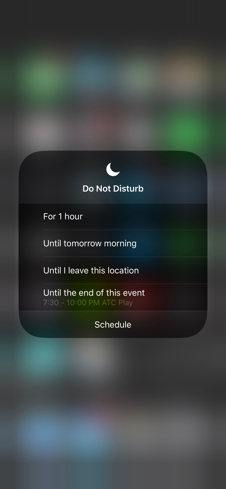
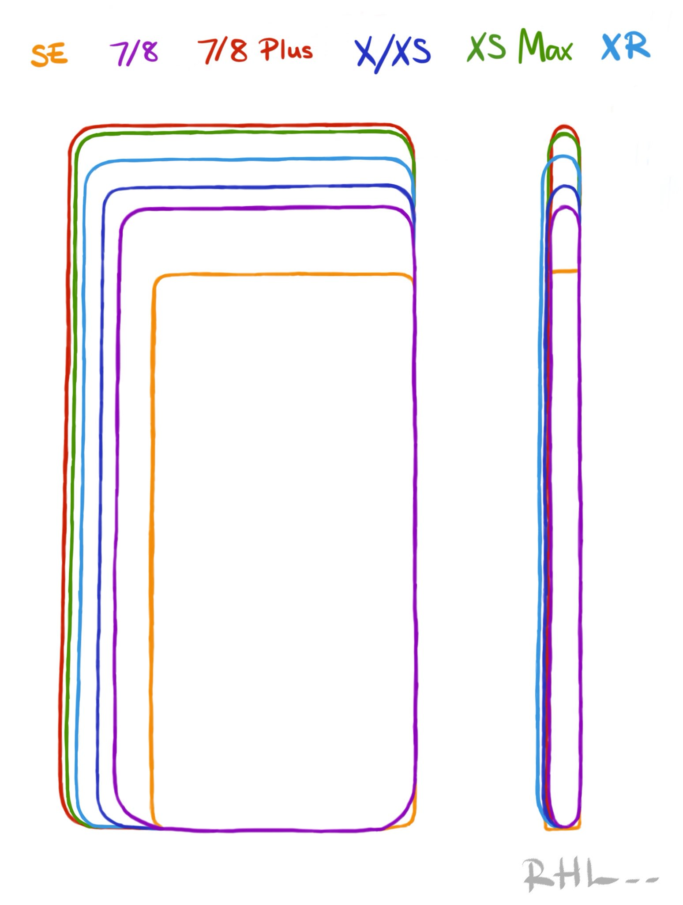

October 2018
new iPUG cards
Take some of the newly printed iPUG cards and give to anyone who might be interested.
Also: the next iPUG meetings are scheduled for Nov 13 (not 6 because of the elections) and December 4.
iOS and Apple news
Apple held a special event last month to announce Watch Series 4, with a 32-35% larger display, and a new electrical heart sensor. New iPhone models (the XS, XS Max, and Xr). The XS Max has the largest display ever on an iPhone. The new iPhone XR has the all-new Liquid Retina display. Apple also released iOS 12, watchOS 5, macOS Mojave, tvOS.
Take a look at all the announcements abbreviated in less than 2 minutes.
Apple has posted the entire event online, you can get it here:
Some details you may have missed, from the Special Event last month, by Macworld.
Here Jony Ive introducing the new iPhone lineup (4 mins):
The new Watch Series 4 has an over 30% larger display, a new electrical heart sensor, a redesigned Digital Crown with haptic feedback. New workouts. Advanced running features. And enhanced cellular connectivity. Here is the new Watch Series 4:
Apple HomePod has added several new features, Apple announced.
iOS 12
iOS 12 has been released. Most iOS devices can upgrade. Here is a list of compatible devices.
Siri Shortcuts is a significant new feature of iOS 12 which you can now find in the new Shortcuts app. (Those who were familiar with Workflow, will recognize that it’s apple’s integration of it into iOS.) Here is an overview , by Macworld. Here is a quick overview from Apple's special event last month:
David Sparks has released a very good Siri Shortcuts course. Watch the intro video to get an idea. The whole course is broken down into many video tutorials.
Apple released the new Measure app that uses AR to measure dimensions with an iPhone or iPad. Here is an overview by Macworld, and a video:
How to use Screentime on iOS 12, by 9to5mac.
For a complete and thorough overview of iOS 12, take a look at iOS 12: The MacStories Review, by Federico Viticci. It is also available as an audiobook.
With iOS 12, Apple has incorporated a lot of smarts. One example is when engaging the Do Not Disturb function (go to Control Center) on her new iPhone, Olga wanted to stop all interruptions during a theater performance. Pressing and holding the DND moon icon, Olga got this set of options (screenshot below). Very smart!

Here is a video with standout iOS 12 features:
Did you know that iOS has an emoji depicting a man with a beard in a spa? You might think it is not used much, but it was recently used by Marc Benioff, the CEO of Salesforce, in a funny an illuminating interview with the NY Times.
Recall also that, as Kandie has pointed out, iOS has a male mermaid, in addition to a female version.
Driving with Carplay and a Watch has improved, thanks to iOS 12 features, reports 9to5mac. `Navigating with Maps and Apple Watch can be very useful with distinctive taps for upcoming turns, but the feature can be distracting if you have a better solution with CarPlay. Starting with iOS 12 and watchOS 5, Apple now lets you choose when you want to receive navigation alerts on Apple Watch.’
With iOS 12, comes a `hidden’ feature’ that could be the birth of a whole industry, Jonny Evans writes Computerworld. `Imagine if you had a low-weight imaging format you could use to transmit a huge quantity of data about an object, such as an image that included height, weight, depth data. That’s exactly what iOS 12’s clever USDZ imaging format provides, and it’s a building block for far more powerful augmented reality (AR) experiences in the future.’ He continues:
`Apple at WWDC 2018 put its weight behind USDZ, a format developed with Pixar and supported by Adobe. This is now supported by iOS 12, and Apple has put command line tools in Xcode 10 that will easily convert 3D models to the format. Just as imaging formats such as TIFF, JPEG, GIF, and even PDF unleashed a big revolution in desktop publishing, AR imaging formats such as USDZ will enable a whole new class of industries and industrial applications of AR.
Evans also writes, `I spoke with Louis Jonckheere, chief product officer at Showpad, to learn his thoughts on this. `AR is starting to become more mainstream for both consumer and enterprise applications, but still doesn’t have a file format that people agree on,’ Jonckheere explained. ‘If a critical mass of people adopt a single file format, such as USDZ, we could see augmented reality applications become even more prevalent.
iOS 12.1 Beta is already available for testing, and it includes group FaceTime.
iPhone
The new iPhone XS and XS Max have been released and are selling fast.
Some people have noted the price of the flagship iPhone XS Max is $1499. Alex B finds it equivalent to a Macbook Pro:
I did a thing to convince myself the XS MAX 512 GB wasn't so expensive pic.twitter.com/ne3hiR2NR9
— Alex B 📈 (@somospostpc) September 15, 2018
Compare iPhone models, by Apple.
The new iPhone are so big, you will not want to put it down, writes The Atlantic in its review.
The truth is that the new screens are not larger, they just feel larger and are immersive. Here is an actual comparison of the physical dimensions of various iPhone models, traced by Kate Mathews, who attended the recent Apple special event:

Did you just get a new iPhone XS, or XS MAx, or maybe even a X? Here are the first 10 things to do, by Macworld.
The new iPhones can read NFC tags without any app, reports 9to5mac.
photography
Apple just released Shot on iPhone XS: Users share their best, showcasing some beautiful photos taken by people using their iPhones
Apple also highlights Shot on iPhone video, reports CultofMac.com. It showcases the new camera with in slo-mo, super-sharp 4K, and time-lapse.
Here is a thorough and very detailed overview, The iPhone XS: Why It Is a Whole New Camera, writes Halide.
A brief summary of Halide’s careful review is this: The iPhone XS is merging exposures and is reducing brightness in brighter areas and reduces darkness in shadows. The detail is still there, but we see it as less sharp due to changes in local contrast. So, photos with subjects in the dark get this smoothed out. The iPhone XS has more noise reduction than previous models. Halide’s tests show that the iPhone XS camera favors higher ISO and faster shutter speeds, resulting in faster photos, but higher noise. To counter the noise, iOS 12’s new Smart HDR feature is taking several photos and stitching them together, applying more noise reduction. This can also result in some loss of detail and local contrast. It can be seen in selfies that were previously blown out (with a light source behind the subject) with more smoothing and less detail.
Camera shoutout: iPhone XS vs. X, by Macrumors.
Pete Souza, ex-White House Photographer, has released photos taken with the new iPhone XS, in an article by the DailyMail. Exquisite photos.
iPhone XS camera review by Austin Mann, who tested it in Tanzania. This is both a review and a tutorial, very worthwhile reading. You can also see some of his Tanzania photos on Flickr.
watch
A new and funny ad for the Watch, speaking to our aspirations:
Watch Apple’s `Real Stories’ about people whose lives were saved by the watch.
How Apple Watch Saved My Life, writes Jason Perlow. He admits he was not a fan of Apple products, but the Watch has changed his mind. He voluntarily participated in a heart study on his Apple Watch. He was then notified that his heart rhythm was not normal. It detected patterns suggesting Atrial Fibrillation. He gives a lot of details in his article. He concludes: `I owe my life to my Apple Watch. Because it started this whole machine rolling. And I was very lucky to have my Afib caught during the last three months of public enrollment in the Heart Study, which ended in early August. I've decided that I will be an Apple Watch customer as long as that product exists. That means I'm also going to be an iPhone customer for life as well. So heck yeah, I'm getting a new iPhone XS when the upgrade program kicks in. And a new iPad Pro.''
Compare the Watch models.
The new Watch Series 4 has ECG capabilities. The app is coming later this year.
Jony Ive says that `every bone in my body tells me this is very significant’, reports the Washington Post. `Ive's comment references new health-related features in the new Watch Series 4, including the ability to detect if you've fallen down and a new feature that lets you take an ECG measurement -- the first time that’s been possible in a wrist-worn device. In the interview, the designer further states that the new watch `will be a more marked tipping point in understanding and adoption of the product.’’
New program offers insurance to Apple Watch owners, reports Apple Insider. `Consumers who own an Apple Watch are being offered $1,000 of accidental death insurance coverage at no cost through a new program from popular health app Cardiogram and two major insurance providers.’
The ECG feature is only the beginning, reports Computer World. Apple is developing many more health features, they write. `Apple is exploring multiple ways in which wearable sensors and machine intelligence can help improve lives. These include: A feature that lets the watch measure respiration rate. At least two blood pressure patents. A patent on a sunscreen detector. Everyone and their dog must by now have heard the whispers Apple plans to develop its own diabetes monitoring tools.'
Are you looking for more bands for the watch? Here are some of the best 3rd party bands reports 9to5mac.
Apple no longer lists nylon woven bands. Here are some nice nylon woven bands by Clock Synergy.
A very good review of Watch Series 4, by Jason Snell. He concludes that `the Apple Watch is currently the most interesting product the company makes.`
The Apple Watch is inching toward becoming a medical device, writes AP News. `Apple is trying to turn its smartwatch from a niche gadget into a lifeline to better health by slowly evolving it into a medical device. The Apple Watch [new features] features allow it to take high-quality heart readings and detect falls.` Real-time ECG data could change the way doctors work with patients.
watchOS 5
With watchOS 5, Apple released new watchfaces.
An overview of new features with watchOS 5, by iPhoneHacks.
Here is a watchOS 5 overview, by iMore.
Here is an overview video of all the new features with watchOS 5:
iOS apps
With iOS 12 and an iPhone XS or XS Max, you can change the aperture after you take the photo. However, the app Slør is still ahead of its time, enabling the editing of a photo's depth of field and creating tilt-shift effects, as shown in the dog portrait below. It's a magical portrait mode tool, says Tapsmart in their review.
PAUSE is a relaxation app. Olga recommends it, as it has become a reliable way to lessen significantly her fear of turbulence when flying. The app appears almost simplistic but the developer claims it is based on scientific principles.
Keep It is a competitor to Evernote. It comes with an iOS client, a macOS client, and the ability to sync across devices.
AirportViewer.com gives you real time air and ground traffic info at many airports. It is a web-app that can be used on any device (and can be bookmarked on an iOS device to the desktop so it acts like an app). Here is the Los Angeles airport view.
The best paid apps for Apple Watch of 2018, by Macworld. Even if you don’t have a watch, these apps have counterparts for the iPhone.
Pay
7-Eleven now accepts Apple pay. `Frictionless experiences are the future, and digital payments are key to such experiences. Consumers prefer shopping at retailers that offer digital payment capabilities. The ability to pay with their smart device gives consumers one more reason to shop at 7-Eleven,' said Gurmeet Singh CDO and CIO of 7-Eleven.
Olga discovered an unexpected benefit of Apple Pay. The credit card associated with her Apple Pay is in fact her simple debit checkcard which she uses for 99% of her purchases. The day before a trip, she went to an ATM and used the (physical) card to make a cash withdrawal, got distracted at the end of the transaction, and left her debit card in the ATM. When she realized it about 20 minutes later, the ATM had already shredded and destroyed the card. However, Olga realized that the financial institution whose ATM automatically destroyed the debit card (for security reasons), did not notify the other financial institution that issued the debit card (as there is no security concern at that point). So, Olga tested whether Apple Pay would still work. She was glad to verify that it did (since the account was still good), and was able to continue using Apple pay on her trip without missing a beat.
Apple Pay now accepted at Costco.
tips & tricks
How to prepare your iOS device for iOS 12.
gadgets & accessories
Prices have dropped for SanDisk iXpand Flash Drive.
Moment has extended their lineup to include iPhone lenses for the latest models. Moment lenses are considered to be among the best choices for external lenses for iPhones. Take a look at a review and their use:
The best thin cases for iPhone XS and XS Max.
The Verge lists The Best Battery Packs for carrying everywhere and charging everything.
Withings Blood Pressure Monitor comes with an app that lets you interpret and track your blood pressure.
privacy & security
Apple has published iOS 12 Security paper, covering details of privacy and security engineering design.
How Apple has Thrived in a Season of Tech Scandals, writes the NY Times. `Because Apple makes money by selling phones rather than advertising, it has been able to hold itself up as a guardian against a variety of digital plagues: a defender of your privacy, an agitator against misinformation and propaganda, and even a plausible warrior against tech addiction, a problem enabled by the very irresistibility of its own devices. Though it is already more profitable than any of its rivals, Apple appears likely to emerge even stronger from tech’s season of crisis. In the long run, its growing strength could profoundly alter the industry.’
Feds Force Suspect To Unlock An Apple iPhone X With Their Face, reports Forbes. This is a legally interesting case that could set new precedents. They write: `Thus far, there’s been no challenge to the use of Face ID in this case or others. But Fred Jennings, a senior associate at Tor Ekeland Law, said they could come thanks to the Fifth Amendment, which promises to protect individuals from incriminating themselves in cases. In previous rulings, suspects have been allowed to decline to hand over passcodes, because the forfeiture of such knowledge would amount to self-incrimination. But because the body hasn’t been deemed a piece of knowledge, the same rulings haven’t been applied to biometric information, like fingerprints or face scans. That’s despite the fact that the use of passcodes, fingerprints and faces on an iPhone has the same effect in each case: unlocking the device.’
Trend Microhas apologized to customers `after several of its consumer macOS anti-malware products and utilities were discovered to be capturing the notebook's browser history data and sending it to a remote server’, reports ZDNet. `Trend Micro apps, which have been removed from the Mac App Store, included Dr Cleaner, Dr Cleaner Pro, Dr. Antivirus, and Dr Unarchiver.`
general news and crossover
There will be a new News Site to investigate Big Tech, reports the NY Times. The Markup will be dedicated to investigating aspects of technology and their effect on society. This effort is led by two Pro Publica journalists and the founder of CraigsList.
Verizon will offer Free Apple TV 4K in 5G Residential Broadband Package, reports Macrumors. `A free Apple TV 4K will be provided to Verizon 5G broadband customers in lieu of a traditional cable box. Verizon is aiming to be the first wireless provider to offer 5G residential broadband and 5G mobile service in the United States. Its home internet installations in Indianapolis, Houston, Los Angeles, and Sacramento are set to begin in the second half of 2018.’